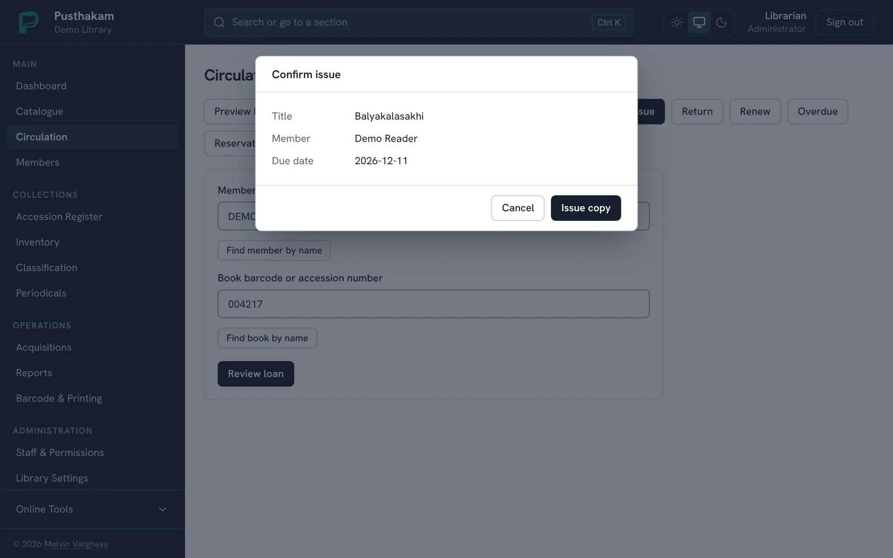
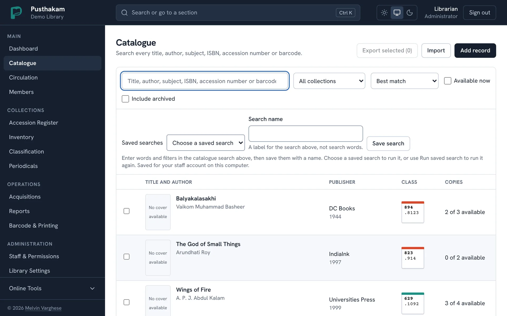
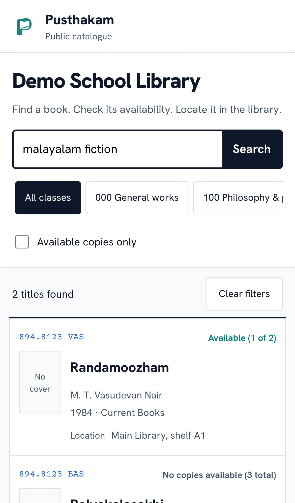
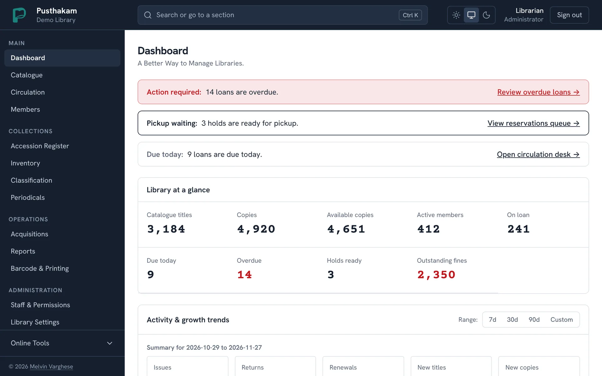

Library software that stays in your library.
Pusthakam catalogues your books, issues and returns them with a barcode scanner, and keeps every record on your own computer. No subscription, no online account, no internet needed.
Version 0.1is being tested now. The first public release will be for Windows.
Made for the circulation desk
Your USB barcode scanner works the moment you plug it in. Pusthakam checks the loan for you and works out the due date from your own loan rules.
- Scan the member cardOr find the member by name.
- Scan the bookBy barcode or accession number, or find it by title.
- Check and issueTitle, member and due date on one screen. Closed days are skipped.
Returns, renewals, reservations, overdue lists, fines and printed due slips work the same way.

One title, every copy accounted for
Describe a book once. Then track each physical copy on its own, with its own accession number, barcode, shelf and condition.
- Search every title, author, subject, ISBN, accession number or barcode from one box.
- Dewey, UDC, Library of Congress or your own classification scheme. Each class gets its colour on the spine label.
- Bring your records with you: import from Excel, CSV, MARC21 or MARCXML, with a ready-made profile for Koha exports.
- Print barcode labels, spine labels and member cards.

Your records stay with you
Your catalogue, members and loan history are years of careful work. Pusthakam keeps them in one database file on the library's own computer, and nowhere else.
No cloud and no account
Your library records are never uploaded. There is no sign-up, and the desk keeps working when the internet is down.
No subscription
No yearly fees, and no limits on how many books or members you can have.
No tracking
The app collects no analytics or usage data. Neither does this website.
Backups you can check
Make a backup in one step, copy it to a USB drive, and restore it if you ever need to. A safety copy is taken before every restore.
Every staff member signs in
Each person has their own account and role, so a volunteer can issue books without changing the library settings.
History is never thrown away
Loans, fines and payments are kept, and the audit log records who did what and when.
The whole library on your Wi-Fi
Turn on Wi-Fi sharing on the library computer, and other devices on the same network can use Pusthakam in a web browser. No internet connection is involved.
- Readers search the public catalogue on their own phones and see what is on the shelf and where to find it.
- Staff sign in from a tablet or another computer to issue and return books in the stacks, with the same permissions as on the desk.
- Member details and staff information never appear in the public catalogue.
The library computer needs to be on and running Pusthakam while others use it.

See the whole library at a glance
The dashboard shows what needs attention today: overdue loans, books due back, reservations waiting for pickup and unpaid fines.
- Reports on circulation, popular titles, stock by location, overdue loans and catalogue growth.
- Export to CSV, Excel or PDF, or print straight from the screen.

All screenshots use made-up sample data.
Everything a library runs on
One program for school, college, public and private libraries. If you do not buy books or take journals, switch Acquisitions and Periodicals off.
Daily work
- DashboardWhat needs attention today
- CatalogueRecords, authors, subjects, search
- CirculationIssue, return, renew, reserve, fines
- MembersCategories, cards and photos
Collections
- Accession registerEvery physical copy
- InventoryScan the shelves, find what is missing
- ClassificationDewey, UDC, LC or your own
- PeriodicalsSubscriptions and issues
Operations
- AcquisitionsRequests, vendors, orders, receiving
- ReportsCSV, Excel, PDF and print
- Barcode and printingLabels, cards, due slips
Administration
- Staff and permissionsAn account for each person
- Library settingsLoan rules, calendar, locations
- BackupsChecked copies, safe restore
- Audit logA permanent record of changes
Where Pusthakam is today
Pusthakam is new and still being tested. We would rather tell you exactly where it stands than oversell it.
Built and tested in code
- Every module listed above
- Import from Excel, CSV and MARC
- Wi-Fi catalogue and staff pages
Being tested for real
- Installing on a fresh Windows computer
- Real barcode scanners and label printers
- A real Koha export, phones and tablets
Before the first release
- A signed Windows installer
- More automatic backups kept
- A short guide for librarians